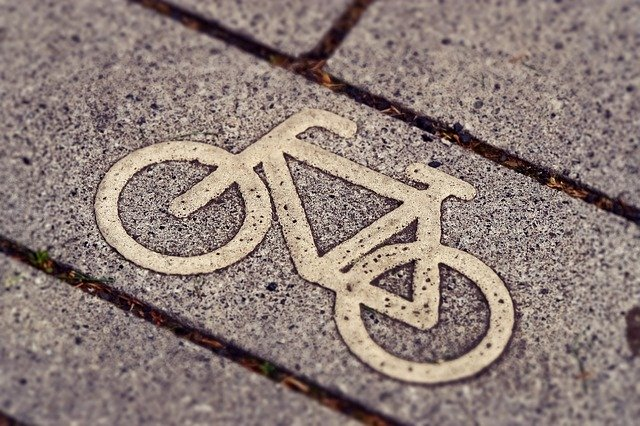

The project contains 4 parts. Parts 1-3 are the analysis city bike during years 2014/2016/2017. The last part of the project is a comparison of previous ones and contains conclusions from the whole analysis.
Purpose: developing programing skills, improving the use of data analysis tools and learning something interesting about the city bike in Lublin.
The project used the Pandas library and data visualization tools (Matplotlib and Plotly). You can learn more about the project here